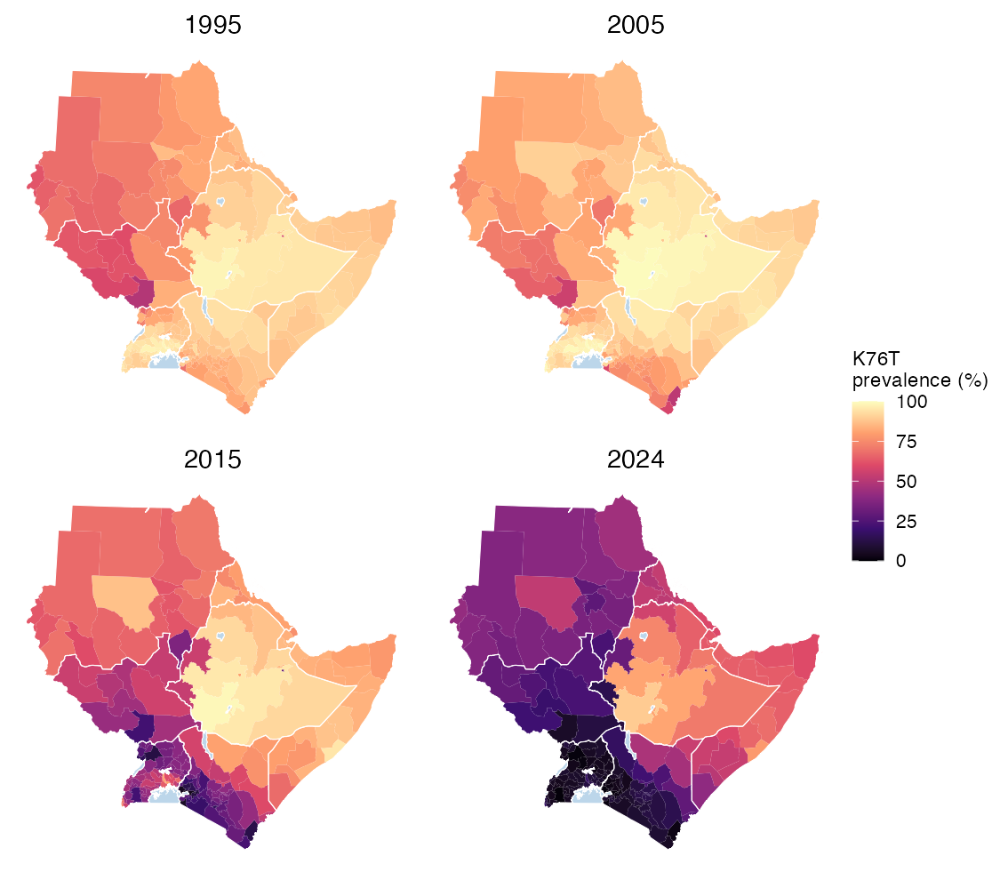

Spatial-temporal areal estimation from survey data
stareal fits a Bayesian space-time model to binomial survey data, such as the prevalence of a drug-resistance marker, at an areal level: administrative units, or any other set of polygons. Time runs in regular steps of your choosing, such as months, quarters or years. The model estimates prevalence in every area and time step, including the many with no surveys, by borrowing strength from neighbouring areas and nearby times, and gives the uncertainty of every estimate. Regional and national summaries are made from the joint posterior, so their uncertainty is right too.
stareal is built for data that are sparse relative to the space-time grid: hundreds of areas, decades of months, and surveys in a small fraction of the area-time cells. Standard areal software carries a latent value for every cell, surveyed or not, which becomes heavy at fine time resolution. stareal integrates the unsurveyed cells out exactly and fits the model to the surveyed cells alone. Its cost depends on the number of surveys, not on the size of the map. The full surface is then rebuilt from each posterior draw. Inference is by MCMC throughout, with no approximation of the posterior.

Installation
# install.packages("remotes")
remotes::install_github("mrc-ide/stareal")A first map
library(stareal)
iso3 <- c("DJI", "ERI", "ETH", "KEN", "SOM", "SSD", "SDN", "UGA") # the eight IGAD countries
adm1 <- sf::st_as_sf(geodata::gadm(iso3, level = 1, path = tempdir(), resolution = 2))
adm1 <- adm1[adm1$ENGTYPE_1 != "Water body", ] # lakes are not places
fr <- areal_frame(adm1, id = "GID_1", groups = c(country = "COUNTRY"),
link_within = "country") # areas and their neighbours
tf <- time_frame(1989, 2024, "month") # the time grid
d <- areal_data(igad_crt76t, fr, tf, y = "positive", k = "tested",
coords = c("longitude", "latitude"), date = "collection_day")
fit <- fit_areal(d) # MCMC, chains in parallel
diagnose(fit) # convergence of every parameter
pr <- predict(fit, groups = "country") # every area-month, and countries
plot(pr, time = "2024-01")Tutorials
| 1. Mapping crt K76T in the Greater Horn of Africa | From a STAVE data object to monthly maps, country trends and probability statements. |
| 2. Rare and emerging markers: k13 R561H in East Africa | Mostly-zero data, exceedance probabilities, and when to doubt the map. |
| 3. Covariates | Covariates by area, by time and by both: building the tables and reading the coefficients. |
| 4. Cross-validation and model comparison | Which model predicts held-out surveys best, and is it calibrated? |
| 5. Simulate, fit, check | Data simulated from known parameters: does the fit recover the truth? |
Get started runs through every step on simulated data in a few minutes. The Method page explains the model, why it is fitted the way it is, and how.
Citation
Verity, R. stareal: spatial-temporal areal estimation from survey data. R package, https://github.com/mrc-ide/stareal.